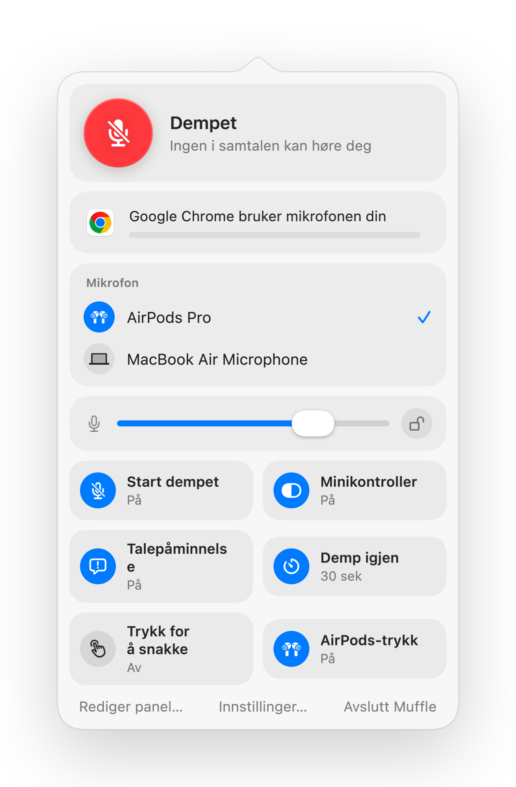

Slik demper du Zoom med AirPods eller en snarvei på Mac
Zooms egen snarvei, Kommando-Skift-A, fungerer bare når Zoom er det aktive programmet foran deg. Når du tar notater eller deler et annet vindu, koster det deg noen klønete sekunder å finne dempeknappen.
Muffle gir deg én felles dempekontroll for Zoom og alle andre apper: dine AirPods, en global snarvei eller menylinjen. Den demper selve mikrofonen, så den fungerer både i Zoom-appen og i videomøter i nettleseren.
Demp Zoom uansett hvor du er
- 1
Installer Muffle og gi mikrofontilgang.
- 2
Bli med i Zoom-møtet ditt som vanlig.
- 3
Trykk på AirPods-stilken eller Control-Tilvalg-M for å dempe, uansett hvilken app du er i.
- 4
Hold inne Control-Tilvalg-M mens du er dempet for å snakke, og slipp for å dempe igjen.

- Hvis Zoom selv fanger opp AirPods-trykket på din Mac, vil snarveien og menylinjen fortsatt dempe deg via Muffle.
- Zoom kan vise deg som ikke-dempet mens Muffle har slått av mikrofonen. Deltakerne hører likevel bare stillhet.
Spørsmål og svar
Erstatter Muffle dempeknappen i Zoom?
Den fungerer ved siden av den. Muffle slår av mikrofonen for alle apper, så du kan dempe Zoom uten å bytte vindu.
Kan jeg bruke trykk-for-å-snakke i Zoom?
Ja. Mens du er dempet, holder du bare inne snarveien i Muffle for å snakke. Dette fungerer i Zoom og i alle andre apper.